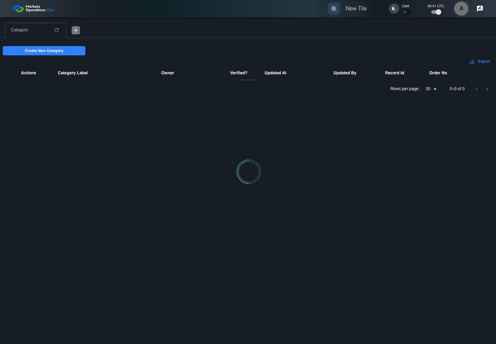

BFF-ADM-031 current BFF administration through actual UI
PASS · application/run-072/bff-adm-031-current-bff-administration-through-actual-ui-7c42c4d88cb7-attempt-1 · ACTUAL_APPLICATION_LOCAL_SERVICES
Actual current React and exact-current BFF admin controllers/services/JPA with actual migration DDL in disposable PostgreSQL. Controlled OUD/EMS2 identities and local Spring bootstrap. Fixture SQL seeds/mutates isolated records; service errors are actual database errors. Undefined agreed messages remain unresolved acceptance.
2026-10-22T06:41:56.802Z to 2026-10-22T06:42:03.212Z
Assertions and result · Artifact manifest · Exact run inputs and source hashes
Result SHA-256:0d989ff3f63dec54eb5f0a35636d537dc9e2e6af7bb325134082a5487b2ebd93Machine observations
- actual-identity-projection.json
76ae418f438ffd5bd0983fe4107f2c970733912a43a9b416cac1d7cbfb2b90d7 - actual-migration-schema.json
4036efb279e5e8a1fee4c1e7c62252a84b92332f233cf2051776c42f16f00cc5 - baseline-inputs.json
fcf5bc8ff790b805ce862346b52f709ca701f65d4420371790f8240b6ff25d61 - bff-boundary.json
151a4ed4e7a9952500739a2ea38cdc91bec8de36a90cbb4e389b384f17a1cb09 - committed-ui-submission-comparisons.json
9d3d102bf46004a3adb9f464ac3ce039e06efabda7ebcbdf53e54a5a196b9506 - creation-clock.json
f79faa6950ed667c1fffdef3ac7011106b2665c3e006c45f8d2173de048b329e - fixture-step-4.json
e2af79976b57ecd69a84f3ede7f804852ce6789c4362dcc58cbd19b2478d23c2 - initial-persisted-records.json
f1b762413626e50612914ed3061b9ffa877a6ea64993ae762702d6c2ca6e2cd3 - persisted-after-submit.json
6757a7e9f3ca7c51508f56bb2109f3d41f3a6342a24c3f70ba20a47c14427e30 - ui-origin-bff-requests.json
4cd6f9fca1c539cf120543db7dd6888c9250a7d53c949554a8c265b177225485
Screenshot capture: CAPTURED. Named frames: 13.
Step screenshot bindings: COMPLETE. 12/12 canonical steps have execution screenshots.
Bindings measure structural coverage only. They do not establish screenshot content quality or relevance.
Screenshot content review: NOT_REVIEWED. Recorded context: 0/13 frames. Identical image bytes: 7 repeated frames. Recorded context does not establish human visual review.
Canonical step timeline
Given Admin A uses subject "admin-a" with role "FMO_ADMIN" in an isolated authenticated browser
Execution: PASSED.
1. step-01 Visible state after step 1: Given Admin A uses subject "admin-a" with role "FMO_ADMIN" in an isolated authenticated browser
2026-10-22T06:42:00.788Z · 1440×1000
Step: /Users/lushevol/code/github/ratan-release-impact/workbench/tasks/ui-test-coverage-20261022/test-cases.md:15994
SHA-256:07641842207548e9c4502990e3cd644331cdd21d4438fe4308936ace1f695a08And the controlled Category fixture records the initial grid rows and persisted values
Execution: PASSED.2. step-02 Visible state after step 2: And the controlled Category fixture records the initial grid rows and persisted values
2026-10-22T06:42:01.014Z · 1440×1000
Step: /Users/lushevol/code/github/ratan-release-impact/workbench/tasks/ui-test-coverage-20261022/test-cases.md:15995
SHA-256:938252a35e9756718bbb1e396b50642ce96367ec923109e175e08ebe8e9fbb25And the controlled creation clock returns 1700000000000 milliseconds
Execution: PASSED.
3. step-03 Visible state after step 3: And the controlled creation clock returns 1700000000000 milliseconds
2026-10-22T06:42:01.095Z · 1440×1000
Step: /Users/lushevol/code/github/ratan-release-impact/workbench/tasks/ui-test-coverage-20261022/test-cases.md:15996
SHA-256:938252a35e9756718bbb1e396b50642ce96367ec923109e175e08ebe8e9fbb25Image bytes match frame 2. An unchanged image can be valid for consecutive assertions. This match does not establish correct step content.
And the baseline fixture data defines "Category Label" as "case-031"
Execution: PASSED.
4. step-04 Visible state after step 4: And the baseline fixture data defines "Category Label" as "case-031"
2026-10-22T06:42:01.163Z · 1440×1000
Step: /Users/lushevol/code/github/ratan-release-impact/workbench/tasks/ui-test-coverage-20261022/test-cases.md:15997
SHA-256:938252a35e9756718bbb1e396b50642ce96367ec923109e175e08ebe8e9fbb25Image bytes match frame 3. An unchanged image can be valid for consecutive assertions. This match does not establish correct step content.
And the prepared database uses the inspected migration DDL and reports its applied schema revision
Execution: PASSED.
5. step-05 Visible state after step 5: And the prepared database uses the inspected migration DDL and reports its applied schema revision
2026-10-22T06:42:01.243Z · 1440×1000
Step: /Users/lushevol/code/github/ratan-release-impact/workbench/tasks/ui-test-coverage-20261022/test-cases.md:15998
SHA-256:938252a35e9756718bbb1e396b50642ce96367ec923109e175e08ebe8e9fbb25Image bytes match frame 4. An unchanged image can be valid for consecutive assertions. This match does not establish correct step content.
When Admin A clicks the button labeled "Create New Category" on the Category administration page
Execution: PASSED.6. step-06 Visible state after step 6: When Admin A clicks the button labeled "Create New Category" on the Category administration page
2026-10-22T06:42:01.495Z · 1440×1000
Step: /Users/lushevol/code/github/ratan-release-impact/workbench/tasks/ui-test-coverage-20261022/test-cases.md:15999
SHA-256:aeaca46798b456e7699cf5f4d0899363c881d4971f52234046141ed40e9a59b5Then the dialog titled "new ID: 1700000000000" is visible on the Category administration page
Execution: PASSED.7. step-07 Visible state after step 7: Then the dialog titled "new ID: 1700000000000" is visible on the Category administration page
2026-10-22T06:42:01.635Z · 1440×1000
Step: /Users/lushevol/code/github/ratan-release-impact/workbench/tasks/ui-test-coverage-20261022/test-cases.md:16000
SHA-256:e2020df6f89c1612d8870e8286eab3a0a594887a5422eb4f06341a8511d55628When Admin A fills the textbox labeled "Category Label" with exactly 255 ASCII "a" characters in dialog "new ID: 1700000000000"
Execution: PASSED.8. step-08 Visible state after step 8: When Admin A fills the textbox labeled "Category Label" with exactly 255 ASCII "a" characters in dialog "new ID: 1700000000000"
2026-10-22T06:42:02.258Z · 1440×1000
Step: /Users/lushevol/code/github/ratan-release-impact/workbench/tasks/ui-test-coverage-20261022/test-cases.md:16001
SHA-256:bf4b3c6227cfe73f3912a13f9379c53640ad98e53ed7f4c9f8c85474a241d110And Admin A clicks the button labeled "Create" in dialog "new ID: 1700000000000"
Execution: PASSED.9. step-09 Visible state after step 9: And Admin A clicks the button labeled "Create" in dialog "new ID: 1700000000000"
2026-10-22T06:42:02.506Z · 1440×1000
Step: /Users/lushevol/code/github/ratan-release-impact/workbench/tasks/ui-test-coverage-20261022/test-cases.md:16002
SHA-256:25a27a67bff701dcdf7e08d466fd2dfd97f5ab7c62a9fae1366d3d2bf858298cThen the Category data grid with column "Record Id" contains exactly one row with the create response Record Id on the Category administration page
Execution: PASSED.
10. step-10 Visible state after step 10: Then the Category data grid with column "Record Id" contains exactly one row with the create response Record Id on the Category administration page
2026-10-22T06:42:02.573Z · 1440×1000
Step: /Users/lushevol/code/github/ratan-release-impact/workbench/tasks/ui-test-coverage-20261022/test-cases.md:16003
SHA-256:25a27a67bff701dcdf7e08d466fd2dfd97f5ab7c62a9fae1366d3d2bf858298cImage bytes match frame 9. An unchanged image can be valid for consecutive assertions. This match does not establish correct step content.
And in the Category data grid with column "Record Id", its "Category Label" cell equals the submitted value without truncation on the Category administration page
Execution: PASSED.
11. step-11 Visible state after step 11: And in the Category data grid with column "Record Id", its "Category Label" cell equals the submitted value without truncation on the Category administration page
2026-10-22T06:42:02.655Z · 1440×1000
Step: /Users/lushevol/code/github/ratan-release-impact/workbench/tasks/ui-test-coverage-20261022/test-cases.md:16004
SHA-256:25a27a67bff701dcdf7e08d466fd2dfd97f5ab7c62a9fae1366d3d2bf858298cImage bytes match frame 10. An unchanged image can be valid for consecutive assertions. This match does not establish correct step content.
And the independent persisted-record readback contains exactly 255 ASCII "a" characters in "Category Label"
Execution: PASSED.
12. step-12 Visible state after step 12: And the independent persisted-record readback contains exactly 255 ASCII "a" characters in "Category Label"
2026-10-22T06:42:02.721Z · 1440×1000
Step: /Users/lushevol/code/github/ratan-release-impact/workbench/tasks/ui-test-coverage-20261022/test-cases.md:16005
SHA-256:25a27a67bff701dcdf7e08d466fd2dfd97f5ab7c62a9fae1366d3d2bf858298cImage bytes match frame 11. An unchanged image can be valid for consecutive assertions. This match does not establish correct step content.
Additional named frames

The final visible state after the named test assertions.
2026-10-22T06:42:02.822Z · 1440×1000Step: Test source: /Users/lushevol/code/github/ratan-release-impact/workbench/e2e/audit-specs/bff-admin.spec.ts:11
SHA-256:
25a27a67bff701dcdf7e08d466fd2dfd97f5ab7c62a9fae1366d3d2bf858298cImage bytes match frame 12. An unchanged image can be valid for consecutive assertions. This match does not establish correct step content.
Screenshots establish visible state only. Assertions and traces support functional claims.